| 日付 | 2009年1月10日（土） - 2009年1月11日（日） | ||||
|---|---|---|---|---|---|
| 山域 | 奥多摩 | ||||
| メンバー | グループ（男9女7） | ||||
| 山行形態 | 1泊2日コテージ泊 | ||||
| アクセス | 電車、バス | ||||
| ルート (Map2) |
|
2日目
昨日は皆かなり飲んでいたが、8時ごろ全員起床。
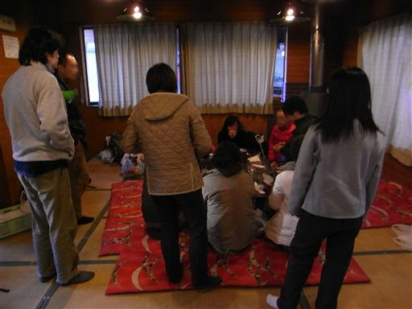
コンロでパンを焼く。火加減を調節すればなかなかきれいに焼ける。
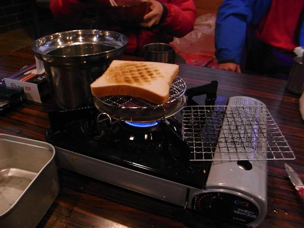
後片付けをして撤収の準備。
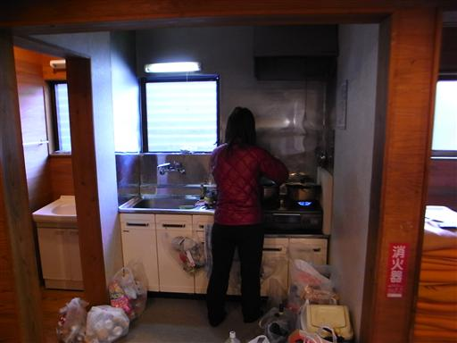
奥多摩ロッジを後にする。今日も快晴だ。
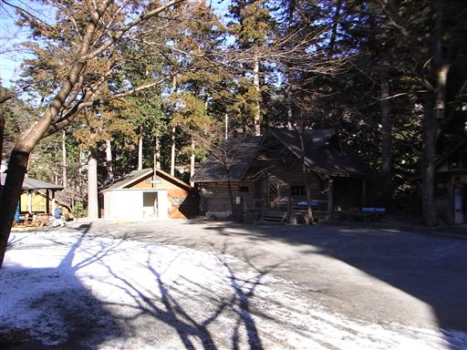
そのまま帰るのはもったいないので、9名で周辺を散策することにする。
山の装備をもってきていない人もいるので、奥多摩むかしみちを歩くことにする。
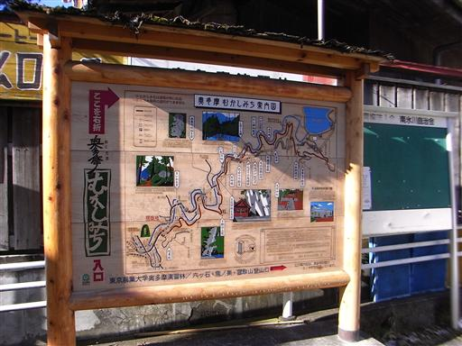
怪しげなトンネルを発見。
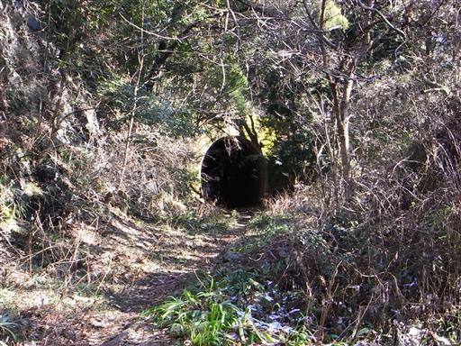
レールが続いているので、昔何かを運ぶのに使われていたのだろう。
廃線となって久しいようだ。
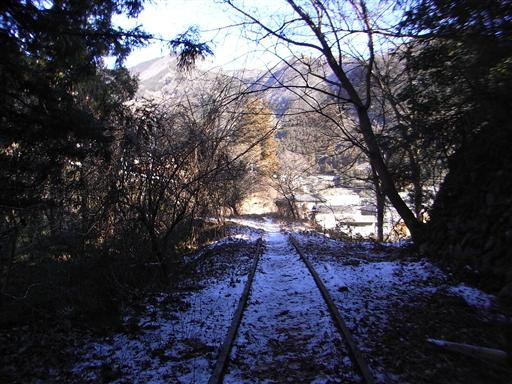
むかしみちというだけあって、道端には地蔵や祠などがあちこちで見られる。
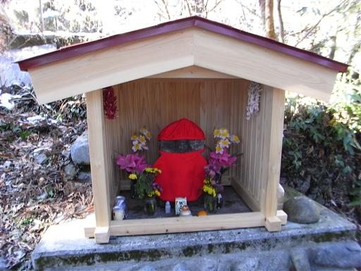
つらら。茎を伝って水が流れていて、それが凍り付いている。
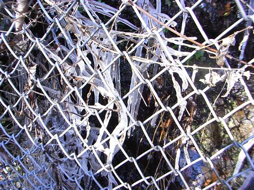
山間の集落を歩いていく。こんなところにも集落が広がっているとは知らなかった。
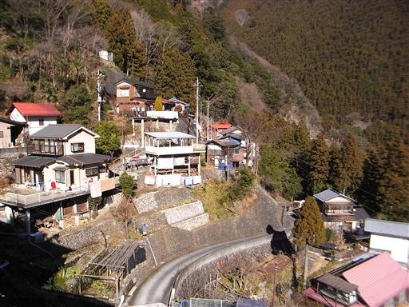
階段を登った先に白鬚神社がある。
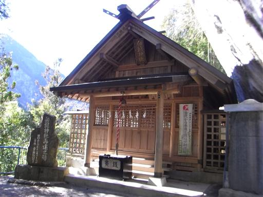
神社のすぐ脇にはオーバーハングした大岩が聳えている。
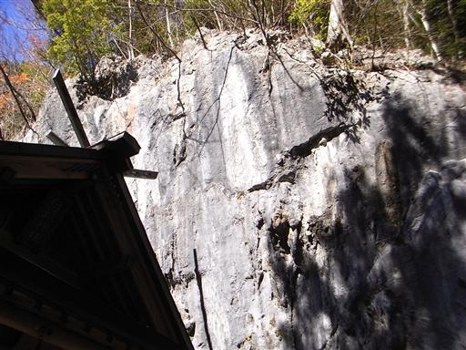
弁慶の腕ぬき岩。ちょうど手がすっぽり入る穴があいている。
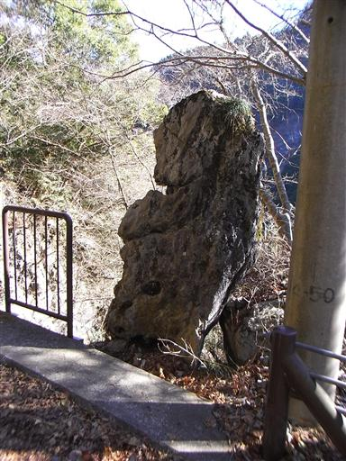
耳神様。耳の形をした(?)石が置かれている。
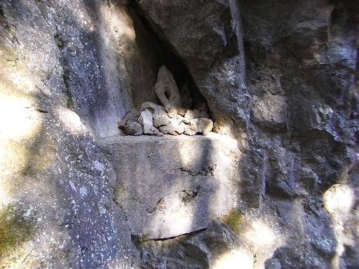
奥多摩渓谷に掛かる吊橋。
横幅が広い橋なので恐怖感はほとんどない。
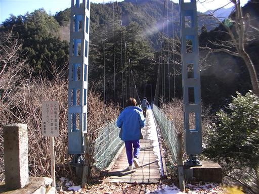
吊橋からの景色。
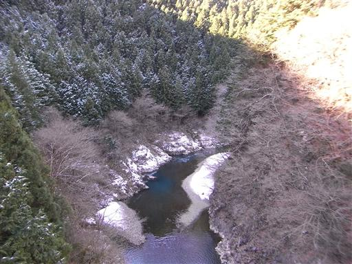
落石を防止するためのフェンスは、地蔵のあるところだけ開けられている。
なかなかほほえましい配慮だ。
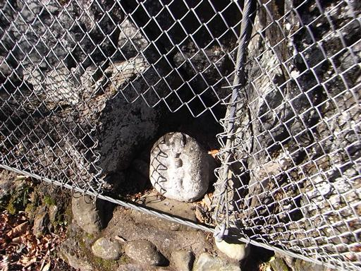
目の前に小河内ダムが見えてきた。
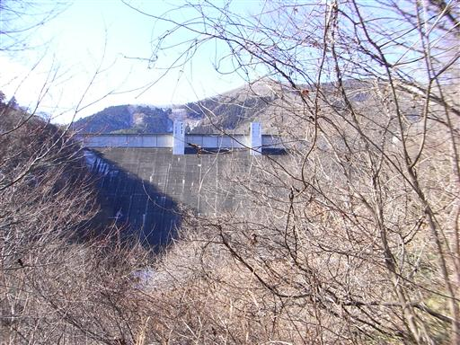
ここからダムの上に出るまで、道はぐんぐん高度を上げる。
それにつれて展望がよくなり、奥多摩の山々が目の前に広がる。
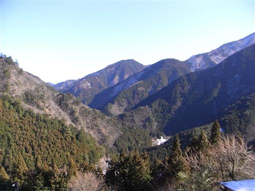
ダムの向こう側に奥多摩湖が見えてくる。
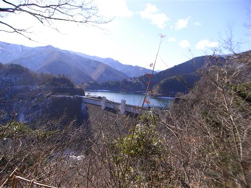
この辺りの斜面は雪で真白になっている。
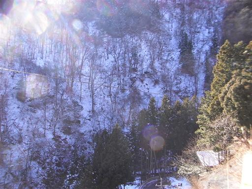
奥多摩湖に到着。湖畔で昼食をとって帰る。
4時間弱の遊歩道だった。
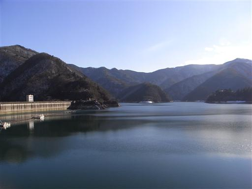